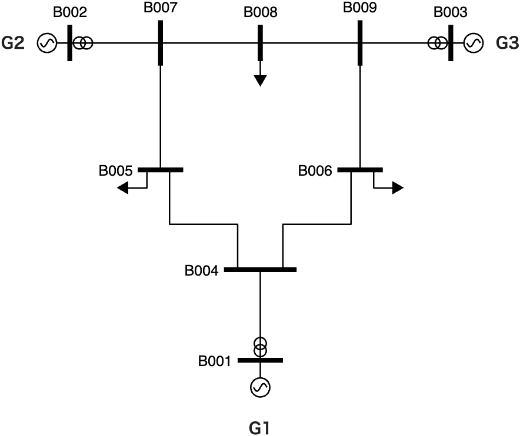
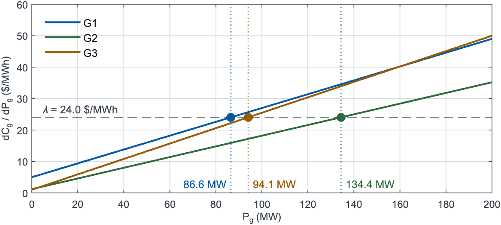
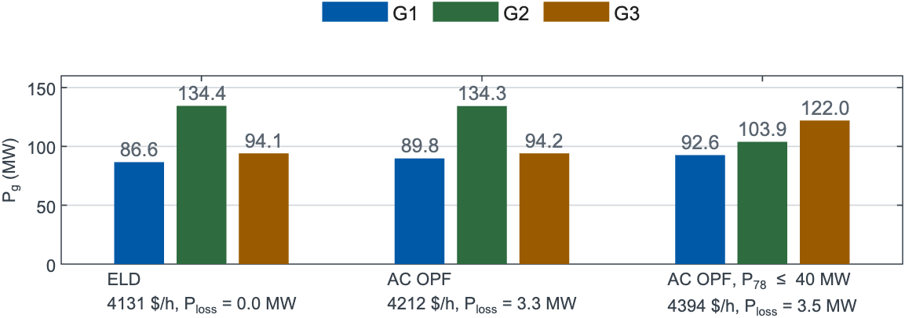
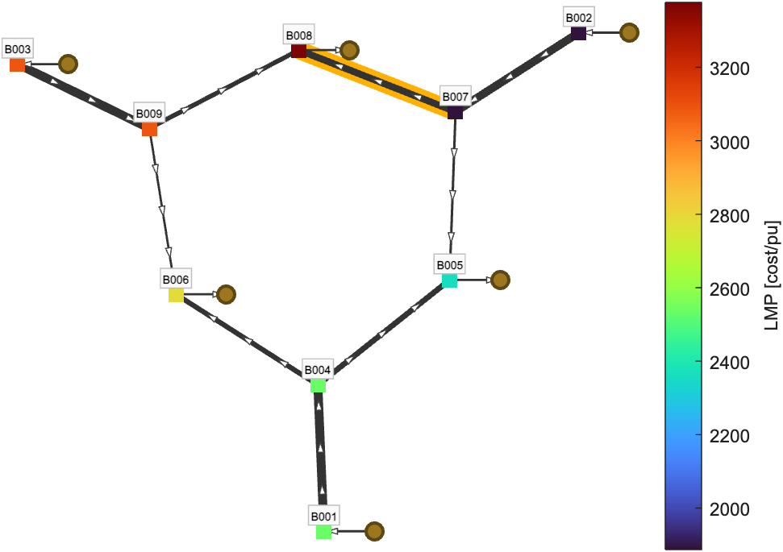
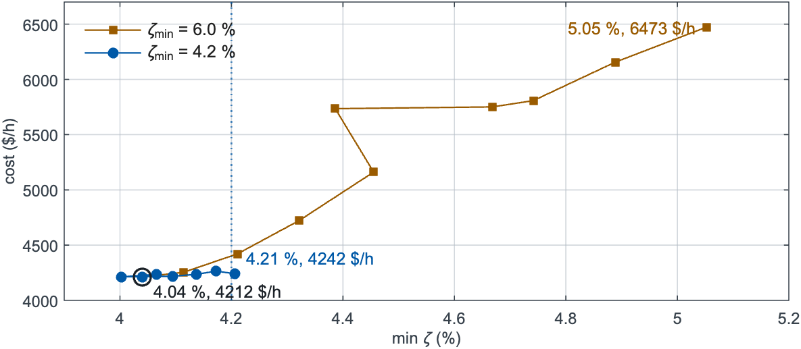
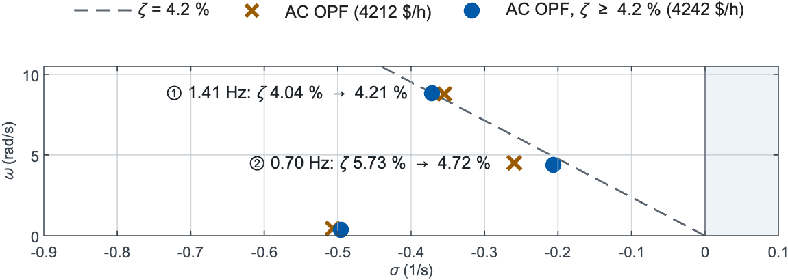

What this Part coversこの Part の内容
- Who decides the outputs of the generators, and what an OPF solves.
- 発電機の出力を誰が決めるか、OPF が何を解くか。
- How the cheapest way to share the demand among generators is found: economic dispatch and the equal incremental cost.
- 需要を発電機にいちばん安く割り振る方法。経済負荷配分と等増分費用の考え方。
- What the optimal power flow (OPF) adds: the power-flow equations and the limits of generation, voltage and line capacity.
- 最適潮流計算（OPF）が加えるもの。電力方程式と、発電の上下限・電圧・線路容量の制約。
- Why a full line makes prices differ from bus to bus: congestion and the locational marginal price (LMP).
- 線路がいっぱいになると母線ごとに価格が変わる理由。混雑と地点別限界価格（LMP）。
- Why a cheaper operating point can swing more, and how an OPF with an eigenvalue condition is solved by repeating OPF and linearization.
- 安い運転ほど揺れやすくなり得る理由と、OPF と線形化を繰り返して固有値の条件を満たす OPF の解き方。
Economic dispatch: sharing the demand at the least cost経済負荷配分：需要をいちばん安く割り振る
A power flow calculation answers “if the generators produce these outputs, what are the voltages and flows?”. The operator, however, has to decide the outputs first. Several generators can supply the same demand, and their fuel costs differ. The question is therefore: how should the demand be shared so that the total cost is the least?
潮流計算は「発電機がこの出力を出したら、電圧と潮流はどうなるか」に答えます。しかし運用者は、まず出力そのものを決めなければなりません。同じ需要を何台もの発電機でまかなえ、燃料費は発電機ごとに違います。そこで問題になるのが、総費用がいちばん小さくなるように需要をどう割り振るかです。
The simplest form of this problem ignores the network and only asks that generation equals demand. It is called economic dispatch (economic load dispatch, ELD). The cost of a thermal generator is usually written as a quadratic function Ci(Pi) of its output:
ネットワークを考えず、発電の合計が需要に等しいことだけを求めるのが、いちばん簡単な形です。これを経済負荷配分（ELD）といいます。火力発電機の費用は、ふつう出力 Pi の 2 次関数 Ci(Pi) で表します。
- This is the total cost: make it smallest!これが総費用：いちばん小さくしたい！
- Total generation = demand発電の合計 ＝ 需要
- Limits of each generator各発電機の出力の上下限
Here PD is the total demand: the total cost is minimized while the outputs add up to it and each stays within its limits. In GUILDA the cost is Ci(Pi) = HP,iPi2 + fP,iPi.
PD は需要の合計です。出力の合計が需要に等しく、各出力が上下限の内にあるという条件の下で、総費用を最小にします。GUILDA では費用を Ci(Pi) = HP,iPi2 + fP,iPi と書きます。
The slope dCi/dPi is the incremental cost (marginal cost): what one more MW from that generator costs. At the optimum, every generator that is not at a limit has the same incremental cost λ; a generator at its upper limit has an incremental cost of λ or less, and one at its lower limit λ or more. If one of them were cheaper at the margin and could still move, moving a little output to it would lower the total cost, so the point would not be optimal.
傾き dCi/dPi を増分費用（限界費用）といいます。その発電機でもう 1 MW 増やすのにかかる費用です。最適な配分では、上下限に達していない発電機の増分費用はすべて等しくなり、その値を λ と書きます。上限に達した発電機の増分費用は λ 以下、下限に達した発電機は λ 以上です。もし動かせる発電機の 1 台だけ増分費用が安ければ、その発電機に少し出力を移すと総費用が下がるので、最適ではありません。
- Incremental cost: the cost of one more MW増分費用：もう 1 MW 増やす費用
- The same value for every generator!どの発電機でも同じ値！
The examples on this page use the IEEE 9-bus system of GUILDA shown below (with an AVR and a PSS on each generator, network.IEEE9bus(LocalController=true)), with the generator cost coefficients of the 9-bus case of MATPOWER (in $/h, without the constant terms) and bus voltage limits of 0.9 to 1.1 pu. The numbers depend on these settings; the ideas do not.
このページの例は、下の図の GUILDA の IEEE 9 母線系統（各発電機に AVR と PSS 付き、network.IEEE9bus(LocalController=true)）に、MATPOWER の 9 母線のケースの発電費用の係数（$/h、定数項を除く）と、母線電圧の上下限 0.9〜1.1 pu を与えたものです。数値はこの設定によりますが、考え方は変わりません。

net.plot_single_line_diagram() (the names G1–G3 are added). Generator Gk is at bus B00k; the loads are at B005, B006 and B008 (315 MW in total). The line between B007 and B008 is the one whose capacity is reduced in the next section.net.plot_single_line_diagram() で描き、発電機の名前 G1〜G3 を書き加えました。発電機 Gk は母線 B00k にあり、負荷は B005、B006、B008 にあります（合計 315 MW）。B007 と B008 の間の線路が、次の節で容量を下げる線路です。
Adding the network and its limits: the optimal power flowネットワークと制約を加える：最適潮流計算
Economic dispatch does not know where the generators and loads are. In a real system the power has to travel over lines, which lose some of it and can carry only so much, and the voltage at every bus must stay in its range. The optimal power flow (OPF) minimizes the same cost, but subject to the power-flow equations and to these limits. Its answer is a full power-flow solution, the cheapest one that respects every limit.
経済負荷配分は、発電機や負荷がどこにあるかを知りません。実際の系統では、電力は送電線を通って運ばれ、その途中で一部が失われ（損失）、送れる量にも限りがあります。また、各母線の電圧は決められた範囲に収める必要があります。最適潮流計算（OPF）は、同じ費用を、電力方程式とこれらの制約の下で最小にします。答えは潮流計算の解そのもので、すべての制約を守るなかでいちばん安いものです。
- Power-flow equations電力方程式
- The balance of active and reactive power at every bus, the same equations as in a power flow calculation. They bring in the losses and the way power spreads over the lines.
- 各母線での有効電力と無効電力のつり合いです。潮流計算と同じ式で、損失や、電力が送電線にどう分かれて流れるかが入ります。
- Generation limits発電の上下限
- Each generator has a minimum and a maximum of active power P and of reactive power Q.
- 発電機ごとに、有効電力 P と無効電力 Q の最小値と最大値があります。
- Voltage limits電圧の上下限
- The voltage magnitude of every bus stays between a lower and an upper limit, for example 0.9 to 1.1 pu.
- 各母線の電圧の大きさを、下限と上限の間（たとえば 0.9〜1.1 pu）に収めます。
- Line capacity線路容量
- The flow on a line or transformer is limited by heating and by stability: a limit on the active power, the apparent power or the current, and sometimes on the angle difference between its ends.
- 送電線や変圧器の潮流は、発熱や安定度のために制限されます。有効電力・皮相電力・電流の上限や、両端の位相差の上限として与えます。
Written out, the AC OPF that GUILDA solves is
式で書くと、GUILDA が解く AC OPF は次のとおりです。
- Minimized over the bus voltages and the P, Q of the components動かす変数は母線電圧と機器の P・Q
- The cost: quadratic in P and Q費用：P と Q の 2 次式
- Branch limits: all written with the bus voltages (magnitude and angle)ブランチの制約：どれも母線電圧（大きさと角度）の式
Vi = |Vi|ejθi is the voltage phasor of bus i (the angle of the reference bus is fixed), Y the admittance matrix of the network, and the bar the complex conjugate. Pg and Qg are the powers injected by component g, positive for a generator and negative for a load; a load has equal lower and upper limits, so its power is fixed. The first constraint is the power-flow equations of every bus: the power sent into the network equals the sum over the components at that bus. The branch limits hold at both ends e of every branch, and a limit set to infinity is left out. The cost coefficients H and f are given per pu of power, in $/h.
Vi = |Vi|ejθi は母線 i の電圧フェーザ（基準母線の角度は固定）、Y は系統のアドミタンス行列、上の横線は複素共役です。Pg、Qg は機器 g が注入する電力で、発電機は正、負荷は負です。負荷は下限と上限が同じなので、電力が固定されます。1 つ目の制約が各母線の電力方程式で、系統へ送り出す電力が、その母線の機器の合計に等しいことを表します。ブランチの制約はすべてのブランチの両端 e にかかり、上限を無限大にした制約は入りません。費用の係数 H、f は単位法の電力あたりで、単位は $/h です。
The chart compares three solutions for the same demand on the IEEE 9-bus system of the single-line diagram above. The AC OPF costs a little more than economic dispatch, because the generators also have to cover the line losses (about 3 MW here). When the capacity of the line between buses 7 and 8 is reduced to 40 MW, the cheap generator G2 next to it can no longer send its power that way. Its output is cut back, and the expensive G3 on the other side makes up the difference, so the cost rises by about 4 %.
下の図は、上の単線結線図の IEEE 9 母線系統で、同じ需要に対する 3 つの解を比べたものです。AC OPF の費用は経済負荷配分より少し高くなります。発電機が送電線の損失（ここでは約 3 MW）もまかなう必要があるからです。母線 7–8 間の線路容量を 40 MW に下げると、その近くにある安い発電機 G2 は、その線路を通して電力を送れなくなります。G2 の出力は下げられ、反対側にある高い G3 がその分を補うので、費用は約 4% 上がります。

Between the two extremes there is also the DC OPF, which treats every voltage magnitude as 1 pu and ignores the losses. It keeps the line limits but becomes a much easier problem, and it is widely used where speed matters, for example in electricity markets.
2 つの間には DC OPF もあります。電圧の大きさをすべて 1 pu とみなし、損失を無視する近似です。線路容量の制約は残したまま、ずっと解きやすい問題になるので、電力市場など速さが求められる場面で広く使われています。
Congestion and the locational marginal price混雑と地点別限界価格（LMP）
The λ of economic dispatch also has a meaning of its own: it is how much the least total cost rises when the demand grows by one unit. The OPF gives such a number for every bus. The locational marginal price (LMP) of a bus is the increase of the least cost when the load at that bus grows by one unit, with all limits still respected:
経済負荷配分の λ は、需要が 1 単位増えたときに最小の総費用がどれだけ増えるかも表します。OPF は、この数を母線ごとに与えます。ある母線の地点別限界価格（LMP）は、その母線の負荷が 1 単位増えたときに、すべての制約を守ったままの最小費用がどれだけ増えるかです。
- This is the price of power at bus !これが母線 の電気の値段！
- The least total cost found by the OPFOPF で求めた最小の総費用
- The load at bus 母線 の負荷
C* is the least total cost found by the OPF, and PD,i the active power of the load at bus i; the other loads are held. It equals the Lagrange multiplier of the active-power balance of bus i at the optimum, which is how it is computed.
C* は OPF で求めた最小の総費用、PD,i は母線 i の負荷の有効電力で、ほかの負荷は変えません。この値は、最適解での母線 i の有効電力のつり合いの式のラグランジュ乗数に等しく、実際にはそこから求めます。
Without any binding line limit, the LMPs are almost the same everywhere; they differ mainly by the losses (with a small part from the voltage limits), by at most about 4 % in this example. When a line is full, it is congested: extra load behind it cannot be served by the cheap generator on the other side, and has to come from a more expensive one, or from a mix that moves the flows around the full line. The prices then split. In the figure the cheap side of line 7–8 has about 19 $/MWh and bus 8 about 34 $/MWh. Bus 8 is even more expensive than any generator's incremental cost (at most 31 $/MWh): serving one more MW there needs G3 to rise and G2 to fall, so that the flow on the full line stays at its limit.
効いている線路容量の制約がなければ、LMP はどこでもほぼ同じで、違いは主に損失によるものです（電圧の上限の影響も少し入ります。この例では最大 4% 程度）。線路がいっぱいになることを混雑といいます。混雑すると、その先で増えた負荷を反対側の安い発電機ではまかなえず、高い発電機から、あるいはいっぱいの線路を避けるように潮流を組み替えてまかなうことになります。すると価格が分かれます。図では、線路 7–8 の安い側は約 19 $/MWh、母線 8 は約 34 $/MWh です。母線 8 の価格は、どの発電機の増分費用（最大 31 $/MWh）よりも高くなっています。そこで 1 MW 増やすには、いっぱいの線路の潮流を上限のままに保つために、G3 を上げるだけでなく G2 を下げる必要があるからです。

An LMP is often split into three parts: the energy part (the price at a reference bus, the same everywhere), the loss part (whether more load at this bus increases or decreases the losses) and the congestion part (the effect of the binding limits). In markets that use nodal prices, the price differences signal where new lines or new generation would be most valuable.
LMP は 3 つの部分に分けて考えることがよくあります。エネルギー分（基準母線の価格で、どこでも同じ）、損失分（その母線の負荷が増えると損失が増えるか減るか）、混雑分（効いている制約の影響）です。地点別の価格を使う電力市場では、価格の差が、新しい送電線や発電所がどこで最も役に立つかを知らせる信号になります。
A cheaper operating point can swing more安い運転ほど揺れやすくなり得る
The OPF looks only at a single steady state. It does not ask what happens when the system is disturbed. The cheapest point, however, often lies at the limits: lines carry much power, the angle differences across them are large, and the output is concentrated on a few cheap generators, possibly far away. Such a point can swing more after a small disturbance.
OPF が見ているのは、1 つの定常状態だけです。系統が乱されたときにどうなるかは考えていません。しかし、いちばん安い運転点は、制約の境界にあることが多くなります。送電線は多くの電力を運び、その両端の位相差は大きくなり、出力は安い（ときには遠くの）少数の発電機に集まります。このような運転点は、小さな外乱のあとに揺れやすくなることがあります。
The reason can be seen with the power over a line, P = V1V2/X · sin δ. Generators are held together by the slope of this curve, like masses by springs. The larger the transfer, the larger δ, and the flatter the curve becomes: the “spring” gets weaker. Heavy transfers also change how the voltage regulators of the generators interact with the swings, which can reduce their damping.
その理由は、送電線で送る電力 P = V1V2/X · sin δ の式で分かります。発電機どうしは、この曲線の傾きによって、ばねでつながれた重りのように結び付いています。送る電力が大きいほど δ は大きくなり、曲線は平らになります。「ばね」が弱くなるということです。また、大きな電力を送っているときは、発電機の電圧調整器（AVR）と揺れとの関係も変わり、減衰が小さくなることがあります。
To check this we use the tools of linearization. Around an operating point, a small swing is a sum of modes, one for each eigenvalue λ = σ ± jω of the linear model. The mode dies out if σ < 0, and oscillates with the frequency f = ω/2π. Its damping ratio ζ says how quickly it dies out compared with its oscillation; a small ζ means a swing that rings for a long time:
これを確かめるには、近似線形化の道具を使います。運転点のまわりの小さな揺れは、線形モデルの固有値 λ = σ ± jω に 1 つずつ対応するモードの重ね合わせです。σ < 0 ならモードは収まり、周波数 f = ω/2π で振動します。ダンピング比 ζ は、振動の速さに比べて揺れがどれだけ早く収まるかを表します。ζ が小さいと、揺れが長く続きます。

How much damping is enough is decided by the operator, often as a minimum damping ratio of a few percent for every mode. The trade-off can then be stated as a problem: which operating point is the cheapest among those that keep every mode damped well enough?
どれだけの減衰があれば十分かは運用者が決め、すべてのモードに数 % 程度の最小のダンピング比を求めることがよくあります。すると、費用と減衰のかね合いは次の問題として書けます。すべてのモードの減衰を十分に保つ運転点のうち、いちばん安いものはどれか、です。
An OPF with eigenvalue limits, solved by repetition固有値の条件を付けた OPF と、その反復
A direct approach is to add the condition “every damping ratio ≥ ζmin” (or “every real part ≤ a limit”) to the OPF. This is a small-signal stability-constrained OPF. The difficulty is that a damping ratio is not a simple formula of the outputs: it needs the linear model at the operating point and its eigenvalues. The usual way around this is to repeat a few simple steps, so that the OPF itself never has to compute an eigenvalue:
直接的な方法は、OPF に「すべてのダンピング比 ≥ ζmin」（または「すべての実部 ≤ 上限」）という条件を加えることです。これを定態安定度（小信号安定度）制約付き OPF といいます。難しいのは、ダンピング比が出力の簡単な式ではないことです。運転点での線形モデルと、その固有値を求めなければ分かりません。そこでよく使われるのが、次の簡単な手順を繰り返して、OPF そのものには固有値を計算させない方法です。
Step ④ uses the sensitivity of each critical mode m: how much its damping ratio ζm changes when the set points u are moved a little. In GUILDA, u holds the outputs P of the generators (except the one at the reference bus, whose P follows from the power flow) and the voltages |V| of the generator buses, and the slopes ∇ζm are found by moving each of them a little and linearizing again. With them, the damping ratio near the current point uk is replaced by a straight line (a plane), and the OPF of the next pass gets the constraints
手順 ④ では、危険なモード m ごとに感度を使います。設定値 u を少し動かしたときに、そのダンピング比 ζm がどれだけ変わるかです。GUILDA では、u は発電機の出力 P（ただし基準母線の発電機は除きます。その P は潮流で決まるからです）と、発電機のある母線の電圧の大きさ |V| で、傾き ∇ζm は、それぞれを少し動かして線形化し直して求めます。これを使って、今の点 uk の近くのダンピング比を直線（平面）で置き換え、次の回の OPF に次の制約を加えます。
- The damping ratio now今のダンピング比
- Sensitivity × how far the set values move感度 × 設定値を動かす量
- A small margin for the error of the straight line直線の誤差を見込んだ余裕
- Trust region: how far this round may move信頼領域：この回に動かせる幅
Here ζmin is the required damping ratio (MinDampingRatio), ζmargin a small margin for the error of the straight line (StabilityMargin, 0.005 by default), and Δk the step each set point may move in this pass. The cut is made for every mode within a band above the limit, not only for the modes that break it. This is the same idea as linearization itself, now applied to a damping ratio. Because the straight line is accurate only near uk, the step is limited (a trust region; it is halved when a pass makes things worse), the cuts are rebuilt from the latest linearization at every pass, and the loop is repeated until the true eigenvalues at the solution meet the limit. GUILDA also lets each cut be broken by a slack with a large cost, so that the OPF of every pass has a solution and moves as far toward the limit as it can.
ζmin は求めるダンピング比（MinDampingRatio）、ζmargin は直線の誤差を見込んだ小さな余裕（StabilityMargin、既定 0.005）、Δk はこの回に各設定値を動かせる幅です。制約は、下限を破るモードだけでなく、下限の少し上の幅に入ったモードすべてに作ります。これは、線形化と同じ考え方をダンピング比に当てはめたものです。直線の近似が合うのは uk の近くだけなので、動かせる幅を制限し（信頼領域。悪くなった回の次は半分にします）、制約は毎回最新の線形化から作り直し、解での本当の固有値が条件を満たすまで反復を続けます。また GUILDA では、各制約を大きな費用付きのスラック変数で破れるようにしているので、毎回の OPF に必ず解があり、下限に向けて進めるところまで進みます。

The point of the method: an eigenvalue condition is hard to write directly, so it is replaced, again and again, by a straight-line approximation built from a linearization at the latest OPF solution.
この方法の要点: 固有値の条件は直接は書きにくいので、最新の OPF の解での線形化から作った直線の近似で、何度も置き換えながら解きます。
A stability-constrained OPF covers small disturbances only. Large disturbances, such as a fault on a line, are a matter of transient stability and need time-domain simulations; they are not part of this method.
安定度制約付き OPF が扱うのは、小さな外乱だけです。送電線の事故のような大きな外乱は過渡安定度の問題で、時間シミュレーションが必要です。この方法には含まれません。
The OPF in GUILDAGUILDA での OPF
In GUILDA, the OPF uses the same network model as the power flow, the time-domain simulation and the linearization. The costs and the limits are parameters of the buses, components and branches, and the network itself is not changed by the calculation.
GUILDA の OPF は、潮流計算・時間シミュレーション・近似線形化と同じ系統モデルを使います。費用と制約は母線・機器・ブランチのパラメータとして持ち、計算によって系統モデルそのものは変わりません。
- Three formulations: calculate_optimal_powerflow solves the economic dispatch ("ELD", no branches), the "DC OPF" (|V| = 1, no losses) or the "AC OPF" (the formulation above), and returns a ResultOPF.
- 3 つの定式化: calculate_optimal_powerflow は、経済負荷配分（"ELD"、ブランチを考えない）、"DC OPF"（|V| = 1、損失なし）、"AC OPF"（上の定式化）を解き、ResultOPF を返します。
- Costs and limits: the cost of each component is a quadratic function of its P and Q (the coefficients HP, fP, HQ, fQ of tab_parameter.OPF); the limits are those of this page (tab_parameter.operation): generation, bus voltage, and the active power, reactive power, current, apparent power and angle difference of the branches.
- 費用と制約: 各機器の費用は P と Q の 2 次関数です（tab_parameter.OPF の係数 HP、fP、HQ、fQ）。制約はこのページで説明したもの（tab_parameter.operation）で、発電の上下限、母線電圧の上下限、ブランチの有効電力・無効電力・電流・皮相電力・位相差の上限です。
- Reading the solution: the ResultOPF draws the dispatch (plot_dispatch), lists the binding constraints (disp_binding), gives the LMPs with their energy, congestion and loss parts (get_lmp, in cost per pu: divide by 100 for $/MWh on a 100 MVA base) and draws them on the network diagram (plot_lmp).
- 解の読み方: ResultOPF は、配分を描き（plot_dispatch）、効いている制約を一覧にし（disp_binding）、LMP とそのエネルギー分・混雑分・損失分を返し（get_lmp。単位は単位法の電力あたりの費用で、100 MVA 基準なら 100 で割ると $/MWh）、それを系統図の上に描きます（plot_lmp）。
- Stability-constrained OPF: giving MinDampingRatio (or MaxRealPart) to an "AC OPF" runs the loop of the previous section, with the dynamic model of the same network (generators and controllers). The network has to be initialized once beforehand. The outer iterations and the modes of the last solution are in result.sct_stability; when the limit is not reached within the allowed number of iterations, the flag is 0 and the message says how far it got.
- 安定度制約付き OPF: "AC OPF" に MinDampingRatio（または MaxRealPart）を与えると、前の節の反復を、同じ系統の動特性モデル（発電機と制御器）を使って実行します。系統は前もって一度 initialize しておく必要があります。外側の反復と、最後の解のモードは result.sct_stability に入ります。決められた回数のうちに条件に届かないときは flag が 0 になり、どこまで届いたかがメッセージに書かれます。
The examples of this page use the costs of the MATPOWER case (HP and fP of G1, G2, G3, in $/h with P in pu) and the voltage limits written at the top of the page. To reproduce them, load IEEE 9-bus, set these parameters, and run the calculations one after another: the economic dispatch, the AC OPF with its binding constraints and LMPs, the limit on line 7–8 (branch EL008) with the AC OPF again, and, after removing the limit and initializing the network, the stability-constrained OPF (about 20 s) with its outer iterations.
このページの例は、ページの初めに書いた MATPOWER のケースの費用（G1、G2、G3 の HP と fP。P は単位法、単位は $/h）と電圧の上下限を使っています。GUILDA で確かめるときは、IEEE 9 母線系統を読み込んでこれらのパラメータを与え、続けて計算します。経済負荷配分、AC OPF とその効いている制約・LMP、線路 7–8（ブランチ EL008）の制限と AC OPF、そして制限を戻して系統を初期化したあとの安定度制約付き OPF（20 秒ほどかかります）とその外側の反復です。
net = network.IEEE9bus(LocalController=true);
HP = [1100, 850, 1225];
fP = [500, 120, 100];
for k = 1:3, gen = net.a_Bus{k}.a_Component{1}; gen.tab_parameter.OPF.HP = HP(k); gen.tab_parameter.OPF.fP = fP(k); end
for k = 1:numel(net.a_Bus), net.a_Bus{k}.tab_parameter.operation.Vmin = 0.9; net.a_Bus{k}.tab_parameter.operation.Vmax = 1.1; end
res = net.calculate_optimal_powerflow(Method="ELD");
res = net.calculate_optimal_powerflow(Method="AC OPF");
res.disp_binding();
tab = res.get_lmp();
net.a_Branch{8}.tab_parameter.operation.Pmax = 0.4;
res = net.calculate_optimal_powerflow(Method="AC OPF");
res.plot_lmp();
net.a_Branch{8}.tab_parameter.operation.Pmax = Inf;
net.initialize();
res = net.calculate_optimal_powerflow(Method="AC OPF", MinDampingRatio=0.042);
res.sct_stability.tab_iterationMost settings, such as the solver or the step sizes of the loop, have defaults and are left to the notes of the Live Script.
ソルバーや反復の幅などの設定には既定値があり、その説明はライブスクリプトの注意書きに回します。
Summaryまとめ
- Economic dispatch shares the demand among generators at the least cost; at the optimum, all generators not at a limit run at the same incremental cost λ.
- 経済負荷配分は、需要を最も安く発電機に割り振ります。最適な配分では、上下限に達していない発電機はすべて同じ増分費用 λ で運転します。
- The OPF adds the power-flow equations and the limits of generation, voltage and line capacity; its answer is the cheapest power-flow solution that respects them.
- OPF は、電力方程式と、発電・電圧・線路容量の制約を加えます。答えは、それらを守るなかでいちばん安い潮流の解です。
- The LMP is the cost of one more unit of load at a bus. A congested line splits the prices, and a bus behind it can be more expensive than any generator.
- LMP は、ある母線で負荷を 1 単位増やす費用です。線路が混雑すると価格が分かれ、その先の母線はどの発電機よりも高くなることがあります。
- The cheapest operating point can be poorly damped. A stability-constrained OPF keeps every damping ratio above a limit by repeating OPF, linearization and constraints from the eigenvalue sensitivities.
- いちばん安い運転点は、減衰が小さいことがあります。安定度制約付き OPF は、OPF、線形化、固有値の感度からの制約を繰り返して、すべてのダンピング比を下限より上に保ちます。
Live Scriptsライブスクリプト
_GUILDAtutorial/Part6_OptimalPowerFlow.mlx: open it in MATLAB withopen Part6_OptimalPowerFlow.mlx(GUILDA on the path). It runs the ELD, the AC OPF, a line limit and the stability-constrained OPF on IEEE 9-bus, with the equations of this page and checks of the results; the whole script takes one to two minutes. The figures on this page can be drawn with this Live Script.GUILDA をパスに入れた MATLAB でopen Part6_OptimalPowerFlow.mlxと実行すると開きます。IEEE 9 母線系統で、経済負荷配分、AC OPF、線路容量の制約、安定度制約付き OPF を、このページの式と結果の確かめとともに実行します。全体の実行には 1〜2 分かかります。このページの図は Part 6 のライブスクリプトで描けます。
References参考文献
- A. J. Wood, B. F. Wollenberg and G. B. Sheblé, Power Generation, Operation, and Control, 3rd ed., Wiley, 2014. A standard textbook on economic dispatch and the optimal power flow, including the incremental cost and the marginal prices.経済負荷配分と最適潮流計算の標準的な教科書です。増分費用や限界価格も扱っています。
- F. C. Schweppe, M. C. Caramanis, R. D. Tabors and R. E. Bohn, Spot Pricing of Electricity, Kluwer Academic Publishers, 1988. The book that founded nodal spot prices, on which the LMP is based.LMP の基になった、地点別のスポット価格の考え方を示した本です。
- R. D. Zimmerman, C. E. Murillo-Sánchez and R. J. Thomas, “MATPOWER: Steady-state operations, planning, and analysis tools for power systems research and education,” IEEE Transactions on Power Systems, vol. 26, no. 1, pp. 12–19, 2011. The OPF formulations of MATPOWER; the cost coefficients of the examples on this page are those of its 9-bus case.MATPOWER の OPF の定式化を説明した論文です。このページの例の費用の係数は、その 9 母線のケースのものです。
- P. Kundur and O. P. Malik, Power System Stability and Control, 2nd ed., McGraw Hill, 2022. Small-signal stability, eigenvalues and damping ratio, and how heavy loading and voltage regulators affect the damping of rotor swings.小信号安定度、固有値とダンピング比、重負荷や電圧調整器が回転子の揺れの減衰に与える影響を扱っています。
- C. Y. Chung, L. Wang, F. Howell and P. Kundur, “Generation rescheduling methods to improve power transfer capability constrained by small-signal stability,” IEEE Transactions on Power Systems, vol. 19, no. 1, pp. 524–530, 2004. Rescheduling generation with eigenvalue sensitivities to meet a small-signal stability limit.固有値の感度を使い、小信号安定度の条件を満たすように発電を組み替える方法です。
- T. Ishizaki (ed.), T. Kawaguchi and K. Kawabe,石崎孝幸 編著、川口貴弘・河辺賢一 著、 電力系統のシステム制御工学 – システム数理と MATLAB シミュレーション –, Corona Publishing, 2022 (in Japanese).、コロナ社、2022 年（計測・制御セレクションシリーズ 4）。 The textbook GUILDA is based on.GUILDA の基になった教科書です。